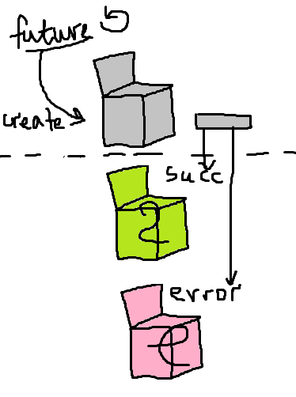

Concurrent, Asynchronous, Efficient
beautiful

by Roksana Seletska, Levi9
About me
Rocksy seletska
Software engineer
Scala JS Go

Open water diver
mail to: rocksyseletska2837@gmail.com
github - boui
Previous talk
Scala intro, monads
Major spoiler
It is not about shared mutable state!
We won't be talking about
Semaphores
Mutexes
Monitors
Locks
are you excited?

What is sad about concurrency?
Concurrent doesn't mean parallel

Concurrent execution only means soma amount of tasks to be executed in some time frame
... but not neccesary silmutaniously
Concurrency starts when you don't have enough cores for each process/thread
Parrallel processes represent real world easily
Concurent is just a way to controll parrallel execution
Native threads
Managed by OS, so heavily depend on OS
Kernel-level sync on critical sections
Really supports multiple CPUs
If a system has n CPUs, then up to n threads can run simultaneously
Scheduling
Pre-emptive scheduling

Time slice or quantum
Context switch
- Decide whether to do a context switch
- Save process with context
- Find best process to execute
- Restore context
Trap(int 0x80)

Summary
Threads may be executed parallel
Switching is really heavy, critical section means major bottleneck
Thread will be interrupted on time slice end
Scheduler and theads amount limit is OS dependent
is it deep enough?

Non preemptive multitasking
Green threads
It is run as one native thread!
Yet, it can be concurrent
Scheduling and switching is managed by Virtual Machine or lib
Quite deterministic scheduling, language dependent
Lightweight since no kernel objects are created
Large number of threads can be started
Goals
Small memory footpint
Memory size is a parameter to VM or library
Controllable switching
Here were scheduler concept appears
Is easy to create
You only need to reserve memory and being put into scheduler queue
Greenlets - Python

Not a native feature of a language
Pretty low level
Based on coroutines
Generator
Intended to generate values on demand
def get_primes(number):
while True:
if is_prime(number): #you know how to check it, right?
yield number
number += 1
#Example of usage
primes_up_to_2000 = for next_prime in get_primes(3)
if next_prime > 2000 return
#Result [1,2,3,5,7,11...]
Coroutine
def coroutine(func):
def start(*args, **kwargs):
g = func(*args, **kwargs)
g.next()
return g
return start
Coroutine is intended to consume values
@coroutine
def grep(pattern):
print "Looking for %s" % pattern
while True:
line = (yield)
if pattern in line:
print line,
g = grep("python")
# Notice how you don't need a next() call here
g.send("Yeah, but no, but yeah, but no")
g.send("A series of tubes")
g.send("python generators rock!") # this will be printed
Pipeline masterpiece
def follow(thefile, target):
thefile.seek(0,2) # Go to the end of the file
while True:
line = thefile.readline()
if not line:
time.sleep(0.1) # Sleep briefly
continue
target.send(line)
# A filter.
@coroutine
def grep(pattern,target):
while True:
line = (yield) # Receive a line
if pattern in line:
target.send(line) # Send to next stage
# A sink. A coroutine that receives data
@coroutine
def printer():
while True:
line = (yield)
print line,
# Broadcast a stream onto multiple targets
@coroutine
def broadcast(targets):
while True:
item = (yield)
for target in targets:
target.send(item)
# Example use
if __name__ == '__main__':
f = open("access-log")
p = printer()
follow(f,
broadcast([grep('python',p),
grep('ply',p),
grep('swig',p)])
)
Greenlets with gevent
# Note: Remember to ``pip install pyzmq gevent_zeromq``
import gevent
from gevent_zeromq import zmq
# Global Context
context = zmq.Context()
def server():
server_socket = context.socket(zmq.REQ)
server_socket.bind("tcp://127.0.0.1:5000")
for request in range(1,10):
server_socket.send("Hello")
print('Switched to Server for %s' % request)
# Implicit context switch occurs here
server_socket.recv()
def client():
client_socket = context.socket(zmq.REP)
client_socket.connect("tcp://127.0.0.1:5000")
for request in range(1,10):
client_socket.recv()
print('Switched to Client for %s' % request)
# Implicit context switch occurs here
client_socket.send("World")
publisher = gevent.spawn(server)
client = gevent.spawn(client)
gevent.joinall([publisher, client])
Cooperative multitasking on coroutines is as simple as this:
We know exactly when coroutine ends, on yield
When it happens scheduler just selects a next coroutine to be executed
#class to incapsulate coroutine itself with meta and target coroutine
#Coroutines shouldn't create a loop
class Task(object):
taskid = 0
def __init__(self,target):
Task.taskid += 1
self.tid = Task.taskid # Task ID
self.target = target # Target coroutine
self.sendval = None # Value to send
# Run a task until it hits the next yield statement
def run(self):
return self.target.send(self.sendval)
#Deterministic scheduler
class Scheduler(object):
def __init__(self):
self.ready = Queue()
self.taskmap = {}
def new(self,target): #create new task and schedule it
newtask = Task(target)
self.taskmap[newtask.tid] = newtask
self.schedule(newtask)
return newtask.tid
def schedule(self,task):
self.ready.put(task)
#start scheduling
def mainloop(self):
while self.taskmap:
task = self.ready.get()
result = task.run()
self.schedule(task)
# ------------------------------------------------------------
# === Example ===
# ------------------------------------------------------------
# Two tasks
def foo():
while True:
print "I'm foo"
yield
def bar():
while True:
print "I'm bar"
yield
# Run them
sched = Scheduler()
sched.new(foo())
sched.new(bar())
sched.mainloop()
# i'm foo
# i'm bar
Goroutines, Go
it is gopher

Goroutines are also coop-multitasking
Original language feature
Motivation - i still want parallelism!
Goroutines multiplexes on OS threads, so even if any will be block, other goroutines can still be executed
func f(from string) {
for i := 0; i < 3; i++ {
fmt.Println(from, ":", i)
}
}
func main() {
// Suppose we have a function call `f(s)`. Here's how
// we'd call that in the usual way, running it
// synchronously.
f("direct")
// To invoke this function in a goroutine, use
// `go f(s)`. This new goroutine will execute
// concurrently with the calling one.
go f("goroutine")
// You can also start a goroutine for an anonymous
// function call.
go func(msg string) {
fmt.Println(msg)
}("going")
// Our two goroutines are running asynchronously in
// separate goroutines now, so execution falls through
// to here. This `Scanln` code requires we press a key
// before the program exits.
var input string
fmt.Scanln(&input)
fmt.Println("done")
}
Goroutine scheduling points
Channel sending and receiving
Calling another goroutine
Blocking syscall
Garbage collection
Multiplexing
At any call to the operating system the call to entersyscall informs the runtime that this thread is about to block
Runtime spinnes up a new thread which will service other goroutines while this current thread blocked.
So Go process contains OS threads
Go runtime taking care of assigning a runnable Goroutine to a free operating system thread
Channels
Goroutines can be sending each other messages
Channels send/receive is synchronous
But channel can be buffered, and it becomes more like mailbox in actor
Channels are also able to be multiplexed, chained and much more
Don't communicate by sharing memory, share memory by communicating.
Beautiful channels use
slidesEvent, Javascript

So...
JS is single threaded
JS doesn't have coroutines yet(
But it has event loop and events, and callbacks ofcourse
Basially how the flow really works

Beautiful single threaded multiprocessing
Do you remember me saying javascript is single threaded?
If you use node.js
Web workers
Web worker can receive/send messages
This is new, fork-exec thread, no state is shared with parent
Actors, Scala

Actor internals
Actors are based on asynchronous messaging idea
It consists of:
Inner state
Messages queue
Lambda
Actors, Scala
Concept details
Actors can be used to control complex asynchronous flows
Actor is single threaded, and only serves one message at a time
Concept encourages never-blocking style
Let it crash philosophy
If it did crash - restart
Concept details
Scala Actor environment
Actors can produce actors hierarchies
Who watches the watchmen?
Actors are good if you need to isolate some state, even mutable
Actors are good for distributed systems
Scala Implementation
Fork-Join Thread pool
Hash map of actors id to actor object
Applying actor lambda to message is what executed in threads
Conclusion
Actors are easy to use abstraction
Actors are good for distributed systems with Remote Actors
Actors system should be working on separate pool
Actors should not block
Actor are cheap to create
Actors are going to be in a demo
Beautiful FSM
One beautiful abstraction
Problem: Callback hell
Reason:Continuation passing style
function getPhoto(tag, handlerCallback) {
asyncGet(requestTag(tag), function(photoList) {
asyncGet(requestOneFrom(photoList), function(photoSizes) {
handlerCallback(sizesToPhoto(photoSizes));
//this can go on..
});
});
}
getPhoto('tokyo', drawOnScreen);
Future
Value that is going to be fulfilled sometime in a future
It may be fulfilled or result with an error
Futures are monadic
Promise
Patterns
Chain
get('story.json').then(function(response) {
return JSON.parse(response);
}).then(function(response) {
console.log("Yey JSON!", response);
});
Catch
asyncThing1().then(function() {
return asyncThing2();
}).then(function() {
return asyncThing3();
}).catch(function(err) {
return asyncRecovery1();
}).then(function() {
return asyncThing4();
}, function(err) {
return asyncRecovery2();
}).catch(function(err) {
console.log("Don't worry about it");
}).then(function() {
console.log("All done!");
});